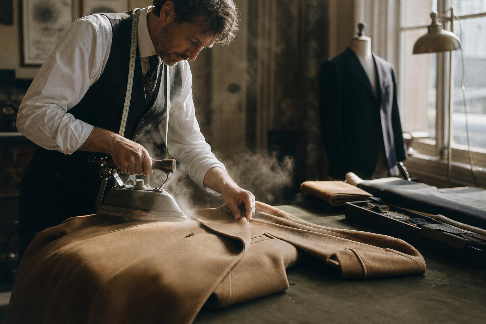

World of Quophy
The house
Founded on a single principle: that a garment should outlive the season it was made for.
Since 1974
A quiet kind of luxury
Quophy began in a two-room workshop with four leather benches and a single cutting table. Fifty years later the method has not changed a great deal — hides are still selected by hand, patterns are still cut in paper before they are cut in leather, and nothing leaves the atelier until it has passed through the hands of the maker who started it.
What has changed is reach. The house now works between Florence, Accra and Paris, drawing on three traditions of making and refusing to flatten them into one. The Primavera collection is the clearest expression of that: botanical studies from the founder's archive, printed in Como, cut in Florence and finished in Accra.

Craft
Folded,
not seamed
A Volta tote passes through forty hands over three days. The hide is cased in water, shaped over a wooden form and left to settle overnight before the handles are set — a technique that removes the need for a side seam, and with it the first place a bag usually fails.
Shop handbags
The Campaign
Primavera
Photographed over two mornings in an unrestored Florentine courtyard, in daylight only. The collection is worn as it is intended to be worn — creased, moved in, lived in.
Shop the collectionSustainability
Materials, traced
Ninety-four per cent of the leather used this season comes from tanneries certified by the Leather Working Group, and every hide can be traced to the farm it came from. Our silk is mulesing-free and woven within sixty kilometres of the print house. Offcuts return to the atelier as small leather goods rather than waste.
Repairs are offered for the life of the piece. A bag bought in 1986 is still a bag we will restore.
Careers
Join the house
We train apprentices in leatherwork, tailoring and client service across our three ateliers. Applications open each January.
Legal
Legal & privacy
This site is a demonstration storefront. No orders are processed, no payments are taken and no personal data is transmitted — the shopping bag is stored in your browser only.